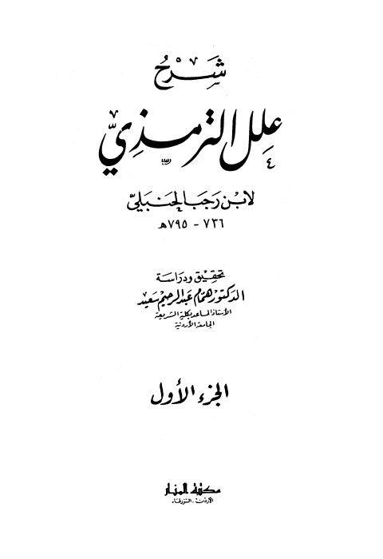

شرح علل الترمذي- مكتبة المنار
Authors: ابن رجب الحنبلي
Editors: همام عبد الرحيم سعيد
Publishers: مكتبة المنار
Download Downloads need an internet connection.
- Published
- 1407هـ 1987م
- Country
- الزرقاء، الأردن
- Edition
- 1
- Pages
- 1018
- Type
- كتاب
- Category
- الحديث وعلومه
Description
**▫️ العنوان: شرح علل الترمذي- مكتبة المنار** ▪️ المؤلف: #عبد_الرحمن_البغدادي_بن_رجب_الحنبلي ▫️ المحقق: #همام_عبد_الرحيم_سعيد ▪️ الناشر: #مكتبة_المنار ▫️ تاريخ النشر: 1407هـ 1987م ▪️ بلد النشر: الزرقاء، #الأردن ▫️ الطبعة: 1 ▪️ عدد الأجزاء: ج 1 ▫️ الصفحات: 1018 ▪️ نوع الوعاء: #كتاب ▫️ التصنيف الرئيسي: #الحديث_وعلومه ۪